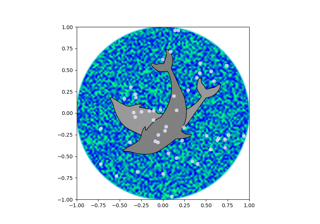
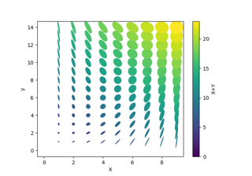
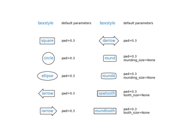
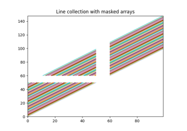
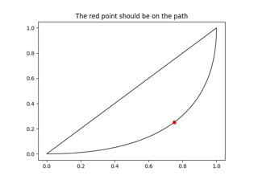

Shapes and collections#


Line, Poly and RegularPoly Collection with autoscaling
Line, Poly and RegularPoly Collection with autoscaling


Dolphins


Ellipse Collection


Drawing fancy boxes



Plotting multiple lines with a LineCollection
Plotting multiple lines with a LineCollection



Bezier Curve